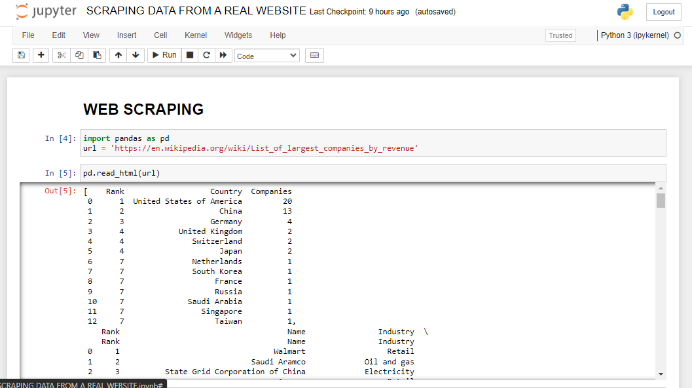
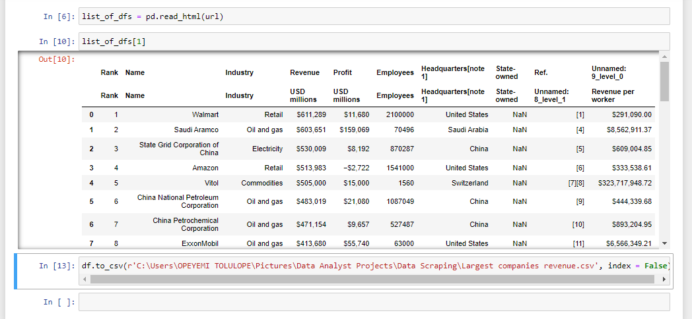

Data Scraping from a Real Website
Website Link : https://en.wikipedia.org/wiki/List_of_largest_companies_by_revenue
WHAT IS DATA SCRAPING
Data scraping, also known as web scraping, involves extracting information from websites. It's a process that utilizes automated bots or web crawlers to navigate through web pages, gather relevant data, and transform it into a structured format for analysis.
